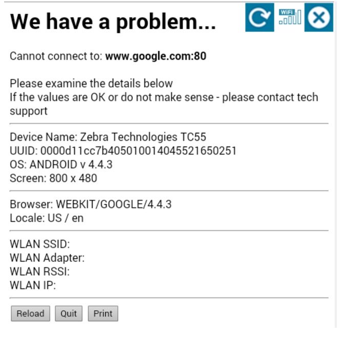
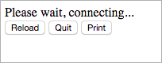

This tutorial covers the use of the Enterprise Browser Printer API and PrinterZebra API, as well as some of the typical considerations when working with USB and wireless printers.
The level of instruction in this tutorial is higher than that of other EB tutorials. Completion of the main training module and several additional EB tutorials is recommended (see below). This tutorial enables the sample app from the MBS1018 lesson to print a ticket with a barcode that contains a summary of error data to a printer attached directly to the mobile device.
For more information, please refer to the Printing Guide.
Note: The code in this tutorial does not implement barcode printing.
Prerequisites
The following are required to complete this tutorial:
- A background in HTML, CSS and JavaScript coding
- Enterprise Browser installed on a development PC
- A Zebra mobile device and USB cable
- Enterprise Browser installed on the Zebra device
- One of Zebra's USB-supported printers or a third-party printer
- A USB "On-the-Go" cable
- Appropriate printer drivers installed on the mobile device
The following are strongly recommended:
- Completion of the MBS1018 Enterprise Browser Development Fundamentals training (or equivalent knowledge)
- Completion of sample application from the MBS1018 training
- Completion of one or more EB API tutorials (Barcode API Tutorial at minimum)
Coding for the Printing API
Those who've completed the Barcode tutorial will find the Printer tutorial quite similar. All calls are callback-based and the process follows the Search → Connect → Initialize → Act formula used by other Zebra APIs that work with peripherals.
Overview
Condensed into its basic steps, the printing process involves:
1-Search and Connect:
- Find and enumerate all visible devices (consider USB, BT and Wi-Fi connections)
- Identify the desired output device
- Connect/pair with the device
2-Initialize:
- Check for printer readiness (connection, media, open panels, etc.)
- Initialize printer
- Configure parameters, invoke template, etc.
3-Print:
- Send raw ZPL data, text, images, templates
- Check results and status
Sample app
The starting point for this tutorial is the sample app from the MBS1018 lesson. If you have not completed that training or didn't save the app, please download the sample app now.
Using this app, the tutorial will demonstrate how to:
- Add a 'Print' button to an existing app page
- Structure the code required to find and connect to a printer
- Send print jobs of various types
At the end of this tutorial, the resulting application will look like the one below:

Preparation
Using the Print APIs requires inclusion of individual print modules eb.printer.js and eb.printerzebra.js, which are part of the ebapi-modules.js library. So before we begin...
1. Confirm that the following JavaScript is in the HEAD section of the sample app's HTML file:
<script type="text/javascript" charset="utf-8" src="ebapi-modules.js"></script>
For more information about how to include API modules, please refer to the Printing API.
Next we'll add a Print button to the main HTML form add a placeholder for displaying print status and log messages and alerts. Such feedback is important for letting the user know of printing progress and potential connection errors, lack of paper, etc. A status window also is more user-friendly than bombarding them with alerts and pop-ups. We will these objects right after the quit button.
2. To add a Print button, insert the following two lines of JavaScript as indicated in the comments below:
// Copy the two lines below:
<button id=”PrintBtn” onClick="print_ticket()">Print</button>
<div><span id="print_status"></span></div>
// and paste them in between the 'Quit' button (below)...
<button onClick="EB.Application.quit()">Quit</button>
// ...and the </BODY> tag, which is near the very bottom of the file.
</BODY>
When finished, this portion of the HTML should look like this:
//Here's roughly how the code should look after adding the 'Print' button:
<button onClick="EB.Application.quit()" >Quit</button>
<button id=”PrintBtn” onClick="print_ticket()">Print</button>
<div><span id="print_status"></span></div>
</BODY>
3. Save the change and reload the page. A new 'Print' button will appear next to 'Reload' and 'Quit' buttons, similar to the image below:

The main flow
The key printing process flow can be accomplished with the four lines of code in the section below.
4. Without adding them in yet, look at the following four lines of JavaScript code and the comments that explain them above each:
// Search for all available printers using a callback.
// This can take some time depending on nearby devices:
EB.PrinterZebra.searchPrinters (<search params>, search_callback)
// Select a printer by considering what was found: 0 or >1.
// Consider displaying a UI to pick and pair with the right one:
var myPrinter = EB.PrinterZebra.getPrinterByID()
// Connect to device. Async callback allows for possible delay:
myPrinter.connect(connect_callback)
// Print. Also takes time and uses a callback.
// Send text, barcodes, images, templates, raw ZPL
// or other command languages, etc.:
myPrinter.print...(<data>)
//Methods include printFromFile, printStoredFormat, printRawString, etc.
The four methods above represent the minimal logic required for printing. However, there are several ways to improve pairing, printing and the overall user experience. We'll implement the printing app's basic methods first, and then explore ways to enhance it.
Since all the code is callback-based, the actual code structure can be presented as nested inline functions (shown below). The comments describe the code and/or additional work that could logically be added but isn’t strictly necessary for this proof-of-concept app.
5. Find the four methods above nested within the JavaScript function below:
// Do some prep work (discussed later) then search all printers:
function print_ticket() {
EB.PrinterZebra.searchPrinters (<search params here>, function(cb) {
// Prep work includes checking for found printers,
// locating the right one and connecting to it.
// Note an individual callback for every printer found.
// This simple code expects just one printer.
var myPrinter = EB.PrinterZebra.getPrinterByID(cb.printerID)
myPrinter.connect(function(cb){
// If connection is successful,
// check printer state and set options and parameters.
// Upload images and format files.
// If printer is ready, print.
// Assuming printer is ready, is in ZPL mode and many other assumptions:
myPrinter.printRawString('^XA^FO20,20^AD^FDTest^XZ',{},function(cb) {
// Update status, display "please wait," error processing, etc.
// Can be ignored in prototype, but not in production.
})
})
})
}
This is the key “skeleton” code. Even without everything described in the comments, this code will actually print something to the connected printer. Below are the printer connection types and the sample search parameter hashes.
6. Add the appropriate code based on the printer to be connected:
TCP/IP (wired or Wi-Fi) with specific address and port:
{"deviceAddress":"1.2.3.4","devicePort":6101,"connectionType":EB.Printer.CONNECTION_TYPE_TCP}
If the IP address is not specified, the device will sweep the entire /8 (255.0.0.0) subnet, and generally cause a long delay.
Bluetooth with specific MAC Address:
{"deviceAddress":"00225898D8CB","connectionType":EB.Printer.CONNECTION_TYPE_BLUETOOTH}
If no Bluetooth MAC address is specified, all devices within range--headsets, laptops, TVs and printers-–will be returned. EB cannot identify a printing device until after it has paired with one.
NOTE: The Android security model does provide a simple means of pairing programmatically; pairing must be performed manually.
USB:
{"connectionType":EB.Printer.CONNECTION_TYPE_USB}
For USB connections, device must be in 'USB Host mode' before the app is started. For more more information about this and other connection types, defaults and [parameters], please refer to the Printer API reference and its Remarks section.
If unable to print, please check the following assumptions:
- Only a single printer is connected
- Printer is accessible and/or 'discoverable' (over BT, etc.)
- Printer connection is always successful
- Printer is loaded with media and ready to print
- Media is of the right type, size, etc.
- Printer is correctly pre-configured to work with the data we want to print (all the settings and options, correct command language and mode used)
Adding flesh to the bones
In the previous section we created the “skeleton” code for printing. The problems in this proof-of-concept app can be grouped in three categories:
- Numerous assumptions
- Does not reflect real-world logic and flow
- Nested inline functions make inflexible and hard to manage
Let’s deal with problems two and three first. Currently, we have three inline callbacks:
function print_ticket() {
EB.PrinterZebra.searchPrinters (<search params here>, function(cb) {
var myPrinter = EB.PrinterZebra.getPrinterByID(cb.printerID)
myPrinter.connect(function(cb){
myPrinter.printRawString('^XA^FO20,20^AD^FDTest^XZ',{},function(cb) {
})
})
})
}
Aside from being inflexible and hard to read, the code also has a fatal flaw; the first callback (for searchPrinters) will be called for every printer. While it will work perfectly well for a single printer, it might waste time attepmting to connect and print if more than one printer is found.
So let's disentangle everything:
function print_ticket() {
EB.PrinterZebra.searchPrinters (<search params here>, search_callback)
}
function search_callback(cb) {
var myPrinter = EB.PrinterZebra.getPrinterByID(cb.printerID)
myPrinter.connect(connect_callback)
}
function connect_callback(cb) {
myPrinter.printRawString(<string>,{},print_callback)
}
function print_callback(cb) {
}
Next, let’s think logically about adding printing capability to an app:
- Does it make sense to begin searching for printers only after user has pressed 'Print'?
- If not, when is the best time to search for and connect to a printer?
- How much time will the search for a printer require?
- How will that delay affect the user experience?
- Should the Print button be disabled until a printer is connected?
- What should be displayed before a printer is selected?
When a single printer is connected via USB cable, most of these questions become irrelevant. But when Wi-Fi or Bluetooth are involved, or if the app is intended for more general purposes, these issues become important to the user experience.
One approach is to search for printers as soon as the app loads and determine actions based on how many are found (0, 1 or >1):
1. If no printers are found, disable print functionality (if the business process allows it).
2. If a single printer is found, connect to it.
3. If more than one printer is found, prompt the user to select the desired printer.
In our example, we decided to disable the Print button upon page load, enabling it only if a suitable printer is found. Here’s what that sample code might look like:
// will hold all the printers found if more than one is expected
// global var used for simplicity
var printers_array = []
function onLoad () { // called when the page loads
// ... other app init code goes here ...
EB.PrinterZebra.searchPrinters (<search params>, search_callback)
// ... other app init code goes here ...
}
function search_callback(cb) { // triggered for EVERY device found
if(cb.status == 'PRINTER_STATUS_SUCCESS' && cb.printerID != undefined) {
v_out('#print_status', "Found printer: " + cb.printerID)
var p = EB.PrinterZebra.getPrinterByID(cb.printerID)
// Add a device only if it has supported printer type
// Here we choose zebra.Check - the API reference for more supported types.
// This code also can do more complex checks
if (p.printerType == PRINTER_TYPE_ZEBRA) printers_array.push(p)
}
else {
v_out('#print_status', "Printer search error: " + cb.status + “:” + cb.message)
}
}
This code will find all the printers and populate the printers_array with the Printer instances that we need. Now, how would we actually know that the search is over and choose the printer to use? Since the code is async, we will need to specify search timeout as part of parameters, and then trigger an async timed function (using JS standard SetTimeout() call). The default timeout is 30 seconds. We’ll reduce it to 10.
var printers_array = [] // will hold all the printers found, if we expect more than one
var myPrinter = null // this will be the printer to use
function onLoad () { // called when the page loads
// ... other app init code here ...
$('#PrintBtn').disabled = true
v_out('#print_status', "Searching for printers")
EB.PrinterZebra.searchPrinters ({"timeout":10000, <other params>}, search_callback)
var PrinterTimeout = setTimeout(process_found_printers, 10500)
}
function process_found_printers() {
// first, stop the search if it's still on
// ideally, the code below should be within the callback of stopSearch()
EB.PrinterZebra.stopSearch()
// but we want it simple
if (printers_array.length < 1 ) { // no printers found
v_out('#print_status', "No printers found")
do_something_when_no_printers_found() // your own logic here
return
}
if (printers_array.length > 1) { // multiple printers found
v_out('#print_status', "Multiple printers found")
myPrinter = choose_one_printer_somehow() // let user choose from menu
} else { // exactly one printer found
v_out('#print_status', "Printer found")
myPrinter = printers_array[0]
}
$('#PrintBtn').disabled = false // enable print button
v_out('#print_status', "Connecting to printer " + myPrinter.ID)
// could specify name or IP instead of ID based on your use case
myPrinter.connect(connect_callback)
}
Now our code actually can search for printers and connect to the chosen one. Once a successful connection is made, we can enable printing functionality. Then our print_ticket() function will be simplified to the following, which makes a lot more sense:
function print_ticket() { myPrinter.printRawString(<string>,{},print_callback) }
Our code now connects to a printer one time and can print information from different parts of the app without additional overhead. However, we still have several assumptions about the printer state and its configuration. We’ll deal with those next.
Working with the printer
Now that a printer is found and connected, we want to ensure it’s properly set up and ready to print. Typical tasks and checks are as follows:
1. Check that the printer is correctly configured in terms of control language, printer settings, media settings, etc.:
getAllProperties(),getProperties(),getProperty()setProperties(),setProperty()enumerateSupportedControlLanguages()
2. If printing images and/or ZPL templates (aka 'formats'), check that they're resident in the printer (and push if necessary):
retrieveFileNames(),retrieveFileNamesWithExtensions()storeImage()
3. Check for printer readiness (i.e. media present, all panels closed, etc.):
requestState()
4. Did the job print successfully (print callback)?
Consider which of these operations must be performed:
- Just once when the app loads
- Prior to sending every print job
- After sending every print job
Unless reconfiguring the printer for varied tasks, the first two will most likely be required just when the app initially loads, and the latter two before and after every job.
Conclusion
This completes the Enterprise Browser Printing tutorial. For more information, please refer to the Enterprise Browser Printer API documentation.